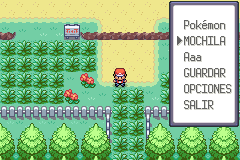
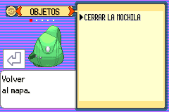
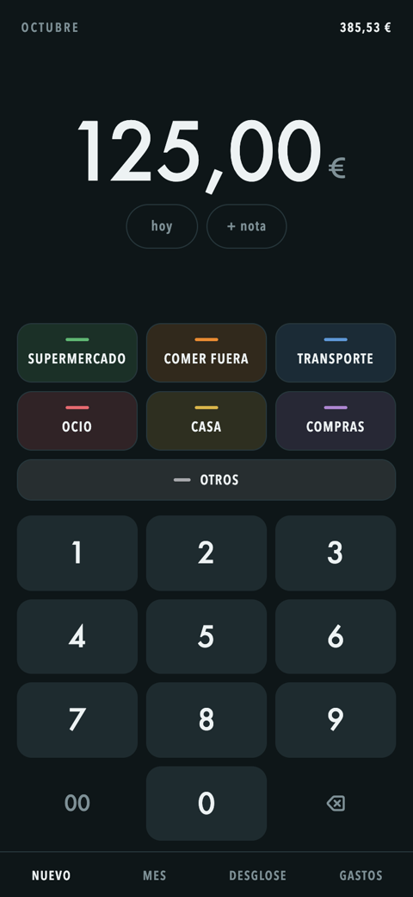
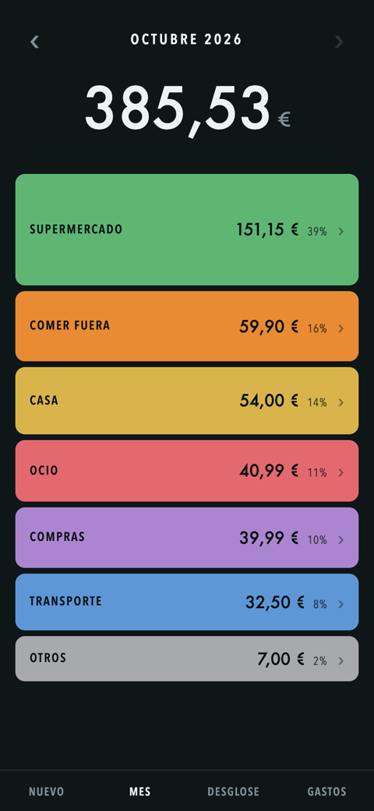

Things I built with AI that worked first time.and what broke first.
I'm not a programmer. Since this summer I've been building tools for my own life with Claude Code.
Carlos NavasMadridOctober 2026
Hi, I'm Carlos.
I recorded it in my room, in one take, with nothing set up. Almost everything else on this page was built with AI, so I wanted to start with something that's just me.
After that come the projects, each one with what didn't work at first and what I changed.
My room, one take, no cuts.
What I use the most
Three wikis that Claude Code keeps for me.
I got the idea from Nate's 6-hour course. It comes from LLM Wiki, a long text by Andrej Karpathy that you paste into your AI agent. You bring the sources and the questions; the AI writes the pages, links them, dates every claim and flags anything that contradicts what's already there.
Career mentor
My main one. I use it to look for work: it collects job offers and scores each one from 0 to 100 against what I want, researches companies as employers, tailors my CV to each offer and keeps track of every application. It also gets to know me (what motivates me, what I'm curious about), so it works as a second brain. And it's told to act like an honest mentor: if an offer isn't right for me, it has to say so.
AI
Where I learn about AI. I file articles, videos and reports into it, and it's the first place I go when I have a question.
Health
For my own health questions. That one stays private.
Claude Code · Obsidian · Markdown · Tavily · three skills I wrote for the career wiki
90linked pages in the AI wiki
40sources behind them
From the AI wiki · translated from Spanish
Two accounts of the same event. Hugging Face calls it a security incident disclosure, an intrusion by an unknown attacker. OpenAI calls it the two companies working together on a security incident during a model evaluation.
The facts don't contradict each other; each framing serves whoever wrote it. Neither is a neutral source, and this wiki doesn't have one that is.
Page: "Hugging Face incident", 3 sources, filed 25 August 2026.
What broke first, and what the wiki does now
i.
It filled gaps with guesses. Twice it marked whole industries as "ruled out" when I'd never said so.Nothing goes in without a source and a date.
ii.
Glassdoor blocks automated access, so company research kept stalling.It works from search snippets and always shows the review count. A 4.5 from six reviews means nothing.
iii.
Tailoring my CV, it upgraded my job titles to match the offer.Written rules for what can be reworded and what can't.
A Pokémon game that enforces its own rules.


Test screenshots of my Spanish translation.
Nuzlocke is a challenge players set themselves: if a Pokémon faints it's gone, and you can only catch the first one in each area. I wanted the game to enforce it, so this FireRed hack releases fainted Pokémon, limits catches per area and shows a game over screen. I also had it translated into Spanish. It runs on my old PSP.
Claude Code · C · pokeemerald-expansion · ARM toolchain · a PSP 3000
The PSP emulator doesn't keep the game's real-time clock.The clock now runs on play time instead.
An expenses app in two taps.
Type the amount like a cash register (the last two digits are the cents), then tap the category. A month view shows where it went. I built a second app the same way, for reminders, mostly to learn how apps are made.
Claude Code · HTML, CSS and JavaScript, no libraries · installable web app
A native iOS app. On a free Apple account it has to be reinstalled every 7 days.A web app saved to the home screen. It's free, it never expires and it works offline.
Amounts stored as decimals, which drift when you add up many of them.Stored as whole cents.


Real app, made-up numbers.
Two smaller things.
Testing a prompt like an experiment
I wanted a prompt that strips the filler out of AI-written text. Instead of eyeballing it, I wrote one test sentence with five known AI-writing markers, fixed the pass criterion before running anything (the empty phrase has to disappear, not just get softer) and logged seven runs across prompt versions.
Microsoft Copilot custom agent · prompt versions · run log
I changed two things at once. The version passed, and I couldn't tell which change fixed it.One variable per comparison. Only one pair in my log is a clean test, so that's the only result I count.
A portfolio site for my brother, an architect
His projects turn on a 3D cube on the home page. I set it up with the CLAUDE.md file from Nate's video Building Beautiful Websites with Claude Code Is Too Easy: Claude screenshots its own work, compares it with reference sites I researched, fixes the differences and goes again.
Claude Code · Tailwind · screenshot-and-compare loop
Before AI.
Research, writing and video, for years.
2019
Studied in the Netherlands
Avans University of Applied Sciences
2019
Started on YouTube
I script, film and edit everything myself. Later came travel videos from Uruguay and Argentina.